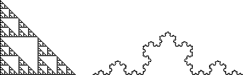

|  |
The gasket (left) is made of three copies of itself scaled by 1/2. The Koch Curve (right) consists of four copies of itself each scaled by 1/3.
From the scaling relation N(r) = (1/r)d we see
For the gasket, taking log of both sides gives
For the Koch curve, the corresponding calculation gives
We can apply this formula to any self-similar object, but not to natural fractals, physical objects (necessarily not exactly self-similar) that twist and turn so much and on so many scales that we can consider them fractals. To handle these we need a more generally applicable method of computing dimensions.
Return to Background.